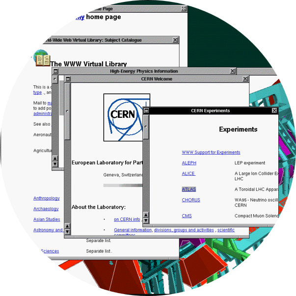
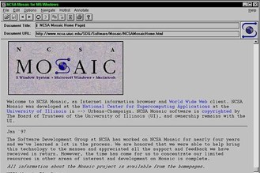
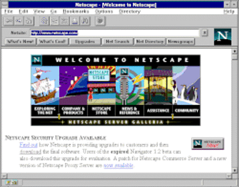
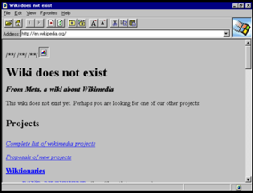
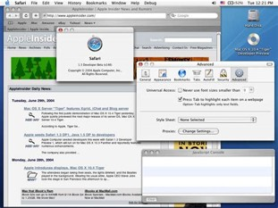
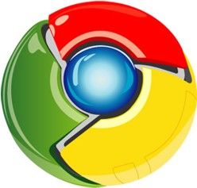

History
The web browser (also known as a client) is an essential tool for accessing the internet and interacting with web applications. Whether you are checking emails, streaming media, or researching a topic, a web browser is the essential interface that brings the internet to life. It acts as a powerful interpreter, taking raw data from distant servers and transforming it into interactive, user-friendly experiences on your screen.
Through the Years...
-

1990 – WorldWideWeb - The first graphical web browser created by Tim Berners-Lee while working at the European Organization for Nuclear Research (CERN) - 1991 – Line Mode Browser – Tim Berners Lee asks Nicola Pellow (a CERN math student) to write this program for basic computer terminals
-

1993 – Mosaic – First popular web browser created by Marc Andreessen at the University of Illinois Urbana-Champaign- Ran on Windows
- Easy to use
- Allowed images embedded in text
- Early ancestor to Mozilla Firefox
-

1994 – Netscape Navigator – Andreessen (creator of Mosiac) founds and releases Netscape Navigator to the public- First browser "for the people"
- Version 2.0 added a full mail reader (Netscape Mail), creating an Internet suite
-

1995 – Internet Explorer – built by Microsoft after licensing the old Mosaic code- Bundled with Windows
- Free of charge for all, even commercial businesses
- Sparked a “browser war” with Netscape that would last 6 years
- Microsoft eventually won the war, and Netscape Navigator was discontinued in 2008
- Internet Explorer went from <5% to >90% market share
-

2003 – Safari – Apple releases its own browser specifically for Macintosh computers -
2004 – Firefox – created by Mozilla as an open-source replacement of Netscape Navigator
- First browser to support extensions
- Mozilla teamed up with Opera (another browser company) and Apple during this time to propose and establish technical standards for HTML and other web technologies
-

2008 – Chrome – released by Google based on their free and open-source software, Chromium- Faster by separating browser processes
- More secure by process isolation
- Built more toward web applications, not just document presentation
- Only available for Windows until 2010